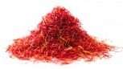

<<<<<<< HEAD
ZačiniZanimljivo je na koji način su začini uticali na tokove civilizacije. Korišćeni su u narodnoj medicini, ishrani, proizvodnji parfema...Danas su u upotrebi mnogobrojni začini, a samo neki od njih su:
Prvi začini kojima se trgovalo na biber i cimet, a vreme za koje se podatak vezuje je čak 2000 godina pre nove ere. |
======= | >>>>>>> 44e1411cea11e0d6ba6533481d7224091f3931d4 |

|